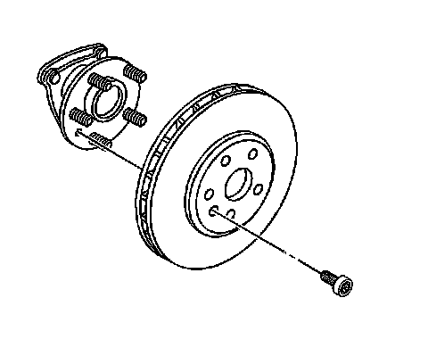

Rear Brake Rotor Replacement
Rear Brake Rotor Replacement
Tools Required
* J 2619-01 Slide Hammer with Adapter
* J 41013 Rotor Resurfacing Kit
* J 42450-A Wheel Hub Resurfacing Kit
* J-46277 Rotor Removal Tool
Removal Procedure
1. Check to be sure that the park brake is released.
2. Raise and support the vehicle. Refer to Lifting and Jacking the Vehicle (Service and Repair) .
3. Remove the tire and wheel assembly. Refer to Tire and Wheel Removal and Installation (Service and Repair) .
Notice: Support the brake caliper with heavy mechanic wire, or equivalent, whenever it is separated from its mount and the hydraulic flexible brake hose is still connected. Failure to support the caliper in this manner will cause the flexible brake hose to bear the weight of the caliper, which may cause damage to the brake hose and in turn may cause a brake fluid leak.
Important: Do NOT disconnect the hydraulic brake flexible hose from the caliper.
4. Remove the brake caliper and the caliper mounting bracket as an assembly from the suspension knuckle and support the assembly with heavy mechanic's wire, or equivalent. Ensure that there is no tension on the hydraulic brake flexible hose. Refer to Rear Brake Caliper Bracket Replacement (Rear Brake Caliper Bracket Replacement) .
5. Matchmark the position of the brake rotor to the wheel studs.

6. Remove the brake rotor mounting screw.
7. Remove the brake rotor. Do not force the rotor off. If the rotor is difficult to remove, ease it off by gently rotating it as you pull outward.

8. If the brake rotor cannot be removed perform the following:
1. Assemble J-46277 to J 2619-01 .
2. Insert J-46277 between the rotor friction surfaces in the vent section of the rotor.
DO NOT place the J-46277 on the rotor friction surface.
3. Using J-46277 and J 2619-01 remove the rotor from the hub assembly.
4. Inspect the park brake components for the following conditions:
* Bent or broken hold down spring
* Broken, cracked, or worn brake shoe lining
* Bent or damaged brake shoe
* Worn, bent, or damaged backing plate
5. If any of these conditions are found replace the affected parts.
Installation Procedure
Important: Whenever the brake rotor has been separated from the hub/axle flange, any rust or contaminants should be cleaned from the hub/axle flange and the brake rotor mating surfaces. Failure to do this may result in excessive assembled lateral runout (LRO) of the brake rotor, which could lead to brake pulsation.
1. Using the J 42450-A , thoroughly clean any rust or corrosion from the mating surface of the hub/axle flange.
2. Using the J 41013 , thoroughly clean any rust or corrosion from the mating surface and mounting surface of the brake rotor.
3. Inspect the mating surfaces of the hub/axle flange and the rotor to ensure that there are no foreign particles or debris remaining.
4. If installing a new brake rotor, adjust the clearance of the parking brake shoe to the drum-in-hat portion of the brake rotor. Refer to Park Brake Adjustment (Adjustments) .
5. Install the brake rotor to the hub/axle flange. Use the matchmark made prior to removal for proper orientation to the flange.
Notice: Refer to Fastener Notice (Fastener Notice) .
6. Install the brake rotor mounting screw.
Tighten the brake rotor mounting screw to 14 N.m (124 lb in).
7. If the brake rotor was removed and installed as part of a brake system repair, measure the assembled lateral runout (LRO) of the brake rotor to ensure optimum performance of the disc brakes. Refer to Brake Rotor Assembled Lateral Runout Measurement (Brake Rotor Assembled Lateral Runout Measurement) .
8. If the brake rotor assembled LRO measurement exceeds the specification, bring the LRO to within specifications. Refer to Brake Rotor Assembled Lateral Runout Correction (Service and Repair) .
9. Install the brake caliper and the brake caliper bracket as an assembly to the suspension knuckle. Refer to Rear Brake Caliper Bracket Replacement (Rear Brake Caliper Bracket Replacement) .
10. Install the tire and wheel assembly. Refer to Tire and Wheel Removal and Installation (Service and Repair) .
11. Lower the vehicle.
12. If the brake rotor was refinished or replaced, or if new brake pads were installed, burnish the pads and rotors. Refer to Brake Pad and Rotor Burnishing (Brake Pad and Rotor Burnishing) .